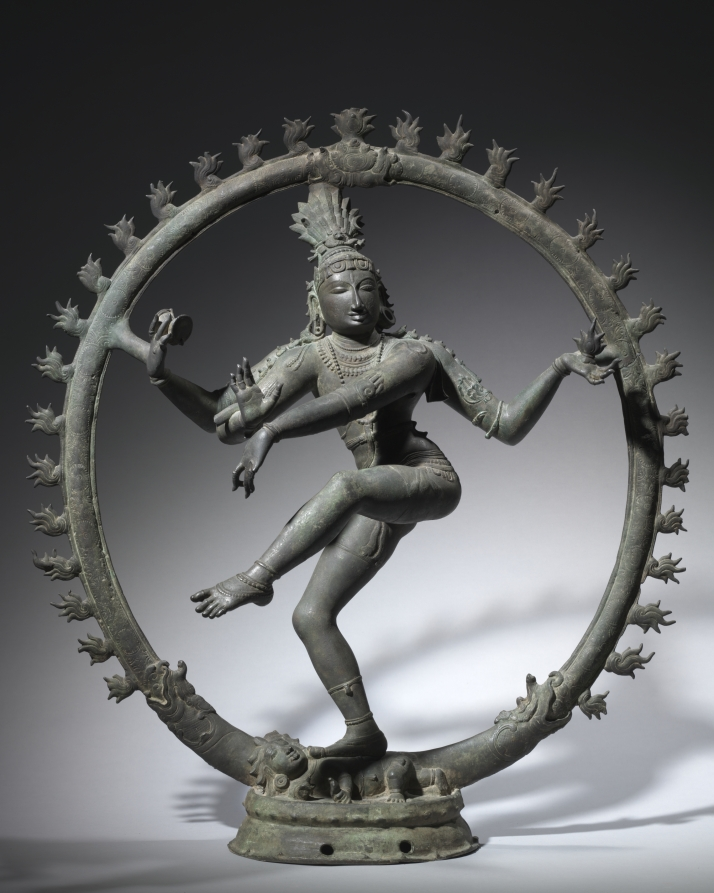
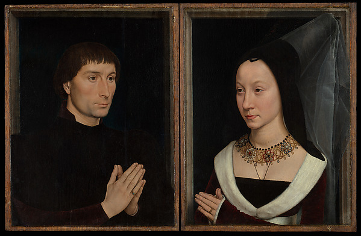
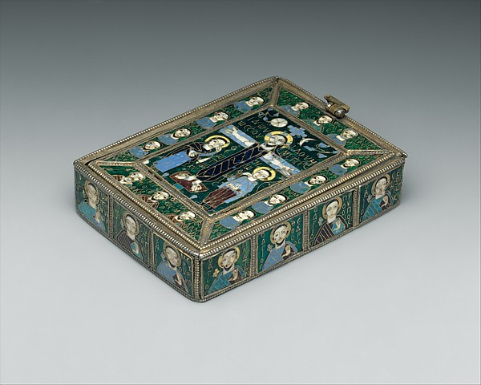
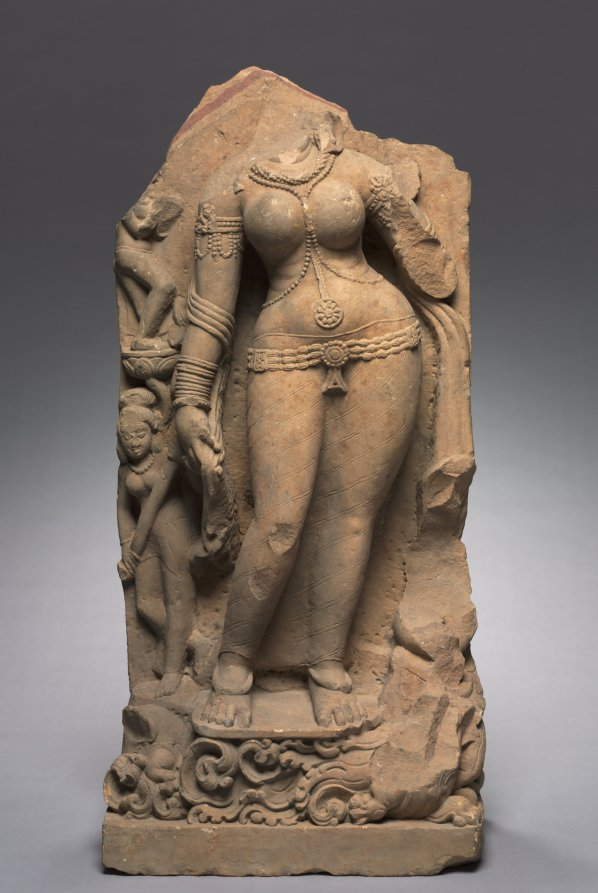
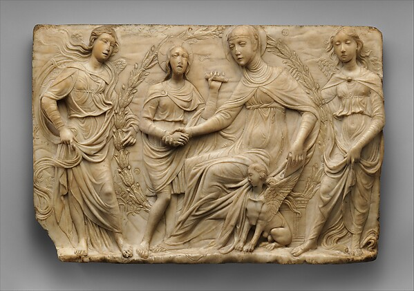
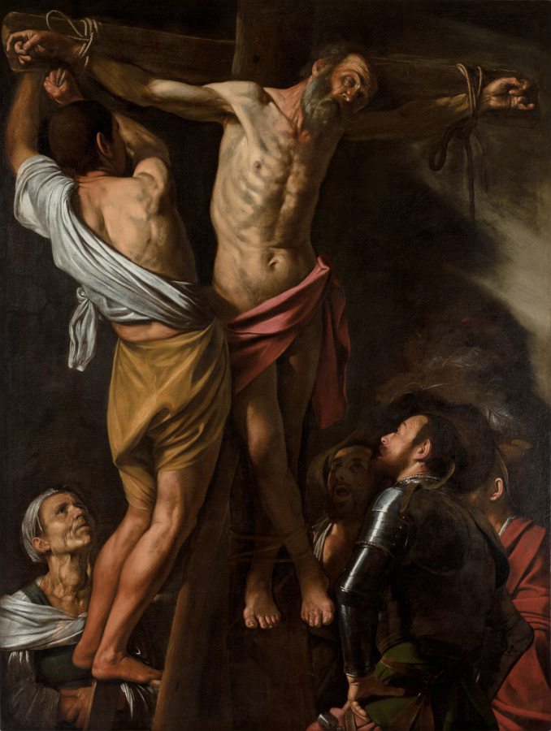
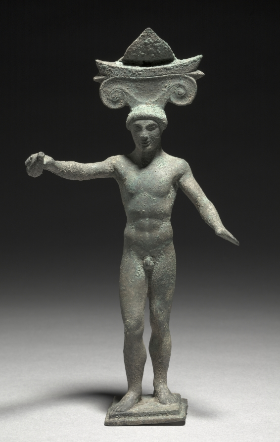
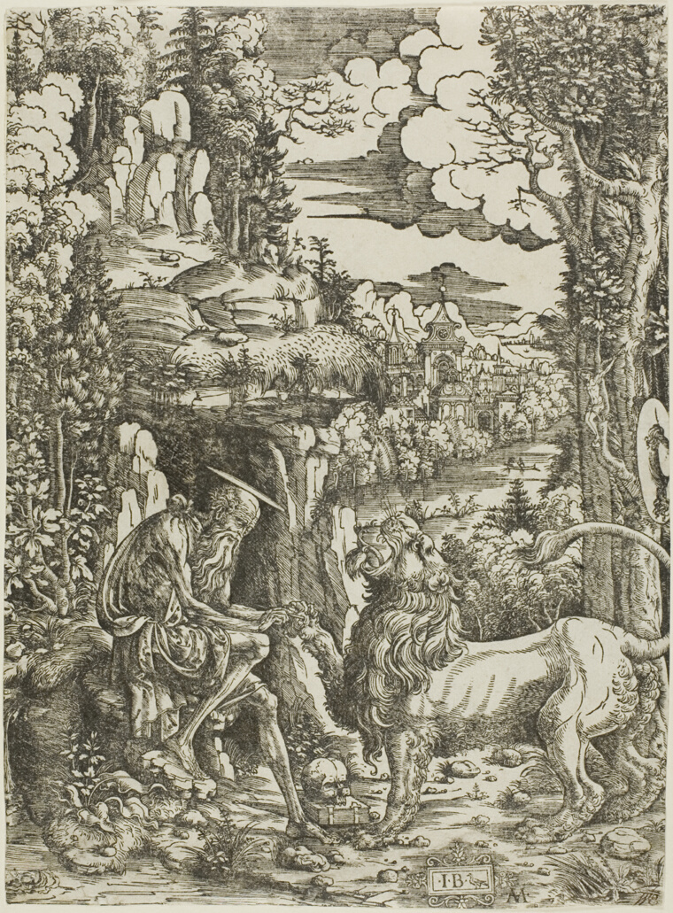

blessings, small saints —
the sacred hiding in the everyday. half of these aren't even about god, not really — they're about a fireplace, a stolen cloak, a kid turning thirty-four. i keep finding the holy where it has no business being. so i taped it all up. (it overlaps. on purpose. mostly.)

this bronze is so alive it barely fits inside its own ring of flames. stillness and motion aren't opposites — they're the same thing.
herbert just hands prayer enormous strange names — then pivots to softness, the milkie way. something understood.

what gets me is how still they are — every fold, the gold chain, every strand of hair — and yet they're mid-moment, suspended in something private. memling caught them between one breath and the next.
keats lets the fireplace do all the emotional work — those quiet cracklings. the poem doesn’t want grand declarations. just more nights like this one, more softness, more time. (that last line catches you sideways)
small relics & the things people whispered into them ↓
the middleham jewel · late 15th c. · yorkshire museum
Ecce Agnus Dei qui tollis peccata mundi … miserere nobis … tetragramaton … Ananyzapta
a sapphire-set gold pendant, engraved with this prayer — ending in a mysterious word thought to ward off epilepsy. someone wore this against their skin, whispering these syllables for protection.
discovered 1985 near Middleham Castle · wikipedia.org/wiki/Middleham_Jewel

I curse him who has stolen my hooded cloak, whether man or woman, whether slave or free, that the goddess Sulis inflict death upon him and not allow him sleep or children now and in the future, until he has brought my hooded cloak to the temple.
scratched onto a lead tablet and buried in a sacred spring nearly two thousand years ago — not to hurt anyone, but to make them so miserable they’d give the cloak back. such a specific, desperate, human thing. rage preserved in metal.
Docilianus son of Brucerus · Roman Bath, Britain · Roman Bath Museum · in search of holy wells…
all that gold and enamel, tiny cloisonné faces — obsessive devotion in every inch. it holds something sacred, so it had to be sacred all over.
stone that learned to be soft ↓


ganga’s power is just in how she stands, adorned with beads carved into stone — somehow making sandstone feel soft and alive.
the marble is impossibly delicate — the folds of every garment, the saint’s face tilted in the act of receiving, the others leaning in to witness. d’Antonio di Duccio carved tenderness into stone.
reverent — both of them
the body’s weight pulls against the cross in those shadows. the men holding him steady — there’s a tenderness in their strain that catches you off guard.
he’s found god, his thirst is fed, and yet he’s still burning. that holy restlessness even after arriving — it’s the most human thing about faith.
prayers that double as something else ↓
not wealth, not comfort — just to close the gap between what he believes and what he does. almost defiant. he wants the hard thing.

swift wrote this for a woman turning thirty-four and instead of apologizing for age he’s just… grateful? amused? joking he’d need the gods to split her in two to make another person worthy of her.
that open gesture is vulnerable and generous at once — like he’s offering something, or asking. he held up a mirror for centuries.
Blessed be God, at the end of the last year I was in very good health, without any sense of my old pain, but upon taking of cold. I lived in Axe Yard having my wife, and servant Jane, and no more in family than us three.
the very first line of his diary — gratitude for his health, then immediately naming the people who were his whole world. he was about to become a witness to all of 1660s London. but on jan 1st he was just relieved he felt okay, and glad his wife and jane were there.
— Samuel Pepys, The Diary of Samuel Pepys, 1 January 1660 · pepysdiary.com

the paradox of moving toward pain because you love what’s on the other side. that spirit flying forward, already knowing, choosing it anyway. stays with you.
meek and proud at once — bowing under the weight of your own genius. the poet at the altar, singing prayer. that’s what poetry actually is, isn’t it?
your soul staying small and still and whole while the body grows without permission. childhood is health. a prayer that doubles as a small miracle.
none of these set out to be holy. that’s sort of the whole thing.
(there were three more i couldn’t fit. maybe that’s ok. a wall’s never really finished.)